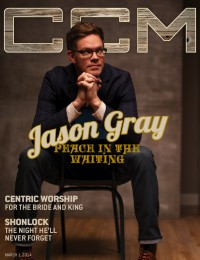
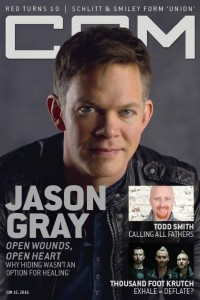

CMnexus
: Contemporary Christian culture, music, and media.
|
Jason GrayOn the cover
1 March 2014
CCM Digital |

15 June 2016
CCM Digital | Media coverage:- Jul 2011 in CCM Digital "Musicians Corner: In the Studio: Jason Gray", by Andrew Greer
- Sep 2011 in Christianity Today "Two Minutes With...: Jason Gray"
- Oct 2011 in CCM Digital "Songs from the Center", by Matt Conner
- Oct 2012 in CCM Digital "Musicians Corner: In the Studio: Jason Gray"
- Nov 2013 in CCM Digital "In [His/Her] Own Words: Why We Say Thanks", by Grace C. Cartwright
- 1 Mar 2014 in CCM Digital "Peace In The Waiting", by Caroline Lusk
- 15 Aug 2014 in CCM Digital "Tour Spotlight: Summerstage 2014, Calvary Church, Orland Park, IL", by Andy Argyrakis
- 15 Jun 2016 in CCM Digital "Open Wounds, Open Heart", by Caroline Lusk
- 15 Sep 2017 in CCM Digital "Sharing Our Scars", by Andrew Greer
Albums & reviews:2001: Live Volume 1: Hoping
2002: A Place Called Hope
2005: The Better Part of Me
2007: All the Lovely Losers
2008: Acoustic Storytime (Live Songs and Stories)
2009: Everything Sad Is Coming Untrue
2011: A Way To See In The Dark
2011: A Way To See In The Dark [Special Edition]
2012: Christmas Stories: Repeat the Sounding Joy
2013: Nothing is Wasted EP
2014: Love Will Have the Final Word
2016: Where The Light Gets In
2020: Order, Disorder, Reorder
2023: Land of the Living
Award Summary (Nominations / Wins)
Dove Awards |
|
<>